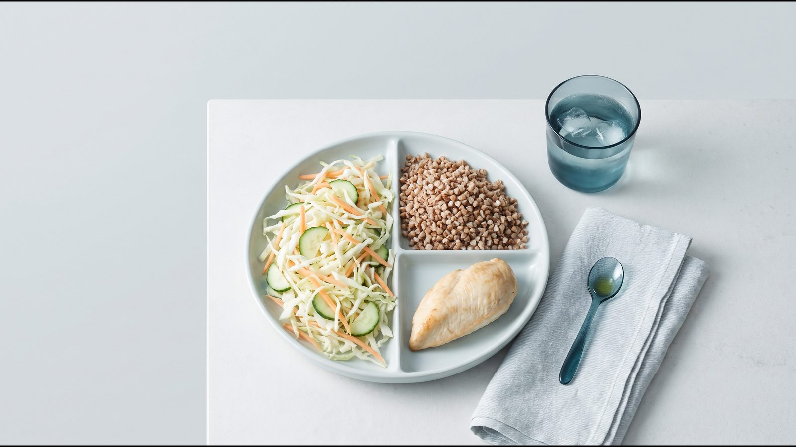

Харчування для схуднення: принципи і меню на 7 днів

5 принципів харчування для схуднення
Правильне харчування для схуднення тримається на помірному дефіциті енергії та звичайних продуктах, а не на заборонах. Головну умову NICE NG246 (2025) формулює просто: з їжею має надходити менше енергії, ніж організм витрачає. Решта принципів допомагає витримати цей дефіцит без постійного голоду.
- Помірний дефіцит. NHS радить зменшити звичний раціон приблизно на 600 ккал на день і називає орієнтир темпу 0,5–1 кг на тиждень. Настанова AHA/ACC/TOS (2013) пропонує 1200–1500 ккал для жінок і 1500–1800 ккал для чоловіків, а раціони 800–1200 ккал NICE допускає лише в спеціалізованій службі. Свою потребу можна оцінити в калькуляторі калорій.
- Половина тарілки з овочів і фруктів. ВООЗ радить щонайменше 400 г овочів і фруктів на день і щонайменше 25 г харчових волокон (клітковини).
- Білок у кожному прийомі їжі. Референтна норма EFSA для дорослих становить 0,83 г білка на кілограм маси тіла на день. В огляді Leidy (Am J Clin Nutr, 2015) раціони з 1,2–1,6 г білка на кілограм допомагали контролювати апетит і вагу, хоча довгострокові дані суперечливі. Для людини вагою 75 кг це 90–120 г на день, приблизно стільки білка в меню нижче.
- Цільні крупи, рослинні олії, менше цукру й солі. ВООЗ радить, щоб вільні цукри давали менше 10 % енергії (близько 50 г, або 12 чайних ложок, при 2000 ккал), жири не більше 30 %, а солі було менше 5 г на день.
- Вода замість солодких напоїв. Гарвардська «тарілка здорового харчування» радить воду, чай і каву без цукру, а сік обмежити маленькою склянкою на день. Норма EFSA (2,0 л для жінок і 2,5 л для чоловіків) рахує всю воду, включно з тією, що є в їжі, тож пити 2 літри понад їжу не обов'язково.
Метод тарілки замість підрахунку
Метод тарілки — модель Гарвардської школи громадського здоров'я (Healthy Eating Plate), яка дає змогу скласти порцію без ваг і калькулятора. Тарілку ділять на три частини, а олію і напої враховують окремо.
| Частина тарілки | Що покласти | Приклади з українських продуктів |
|---|---|---|
| ½ | Овочі й фрукти | капуста, огірки, помідори, буряк, морква, кабачки, броколі, яблука, ягоди |
| ¼ | Цільні зерна | гречка, вівсянка, перловка, бурий рис, житній або цільнозерновий хліб |
| ¼ | Білок | куряче філе, індичка, хек, минтай, скумбрія, яйця, кисломолочний сир, квасоля, сочевиця |
| Помірно | Рослинні олії | соняшникова або оливкова, у меню нижче 1–2 чайні ложки на страву |
| Окремо | Напої | вода, чай, кава без цукру; молочні продукти 1–2 порції на день |
Картоплю Гарвард не зараховує до овочів, тому в меню вона займає місце гарніру. При цьому в дослідженні індексу ситості (Holt, Eur J Clin Nutr, 1995) варена картопля насичувала в сім разів сильніше за круасан з тією ж калорійністю. Ситість там зростала разом із вмістом білка, клітковини й води та масою порції, а з вмістом жиру падала.
Підрахунок калорій теж працює, але точно оцінити з'їдене складно будь-кому. У дослідженні Lichtman (NEJM, 1992) люди, яким не вдавалося схуднути на «низькокалорійній» дієті (група з 10 осіб), записували в середньому на 47 % менше їжі, ніж з'їдали насправді. Для старту простіше стежити за пропорціями тарілки, а цифри перевіряти час від часу.

Меню на 7 днів: приклад
Нижче наведено меню для схуднення на тиждень, складене за методом тарілки з продуктів, які є в будь-якому українському супермаркеті. Базовий рівень дає приблизно 1600 ккал на день, а щоб вийти на ~1900 ккал, додайте продукти з останньої колонки. Калорійність ми порахували за середніми значеннями складу продуктів, тому цифри наближені: реальні залежать від рецепта і марки.
Як читати меню: крупи й сочевицю вказано в сухому вигляді, квасолю консервовану, м'ясо і рибу в сирому, 1 ч. л. олії дорівнює приблизно 5 г. Продукти з останньої колонки додайте до страви, де такий продукт уже є (крупа, хліб, олія, вареники), а фрукти, горіхи, кефір і шоколад з'їжте в перекус. Щодня в меню щонайменше 600 г овочів і фруктів і білок у кожному прийомі їжі. Рівень підбирайте так: від того, скільки ви з'їдаєте зараз, мінус близько 600 ккал.
Будні
| День, ≈ ккал | Сніданок | Обід | Перекус | Вечеря | Для ~1900 ккал додати |
|---|---|---|---|---|---|
| Понеділок, 1600 / 1900 | Вівсянка 50 г на воді, кисломолочний сир 5 % 100 г, ягоди 100 г, волоські горіхи 10 г | Гречка 70 г, куряче філе 150 г, запечене з 1 ч. л. олії; салат з капусти й моркви 200 г з 1 ч. л. олії | Яблуко, кефір 1 % 250 мл | Хек 200 г, запечений з кабачком, перцем і цибулею (280 г) та 1 ч. л. олії; картопля 200 г | Хліб 40 г, волоські горіхи 15 г, банан |
| Вівторок, 1590 / 1890 | Житній хліб 50 г, кисломолочний сир 80 г із зеленню, помідор, варене яйце | Перловка 60 г, тушкована яловичина 120 г, вінегрет 300 г з 1 ч. л. олії | Натуральний йогурт 150 г, груша | Індичка 150 г, тушкована з броколі 200 г і 2 ч. л. олії; бурий рис 50 г | Бурий рис 20 г, волоські горіхи 15 г, яблуко, 1 ч. л. олії |
| Середа, 1610 / 1880 | Гречка 60 г з молоком 2,5 % 200 мл, варене яйце, огірок | Суп з червоною сочевицею 50 г, куряче філе 100 г, морква, цибуля, помідор; хліб 40 г; салат з огірків і помідорів 200 г з 1 ч. л. олії | 2 мандарини, волоські горіхи 15 г | Запечена скумбрія 120 г, картопля 200 г, квашена капуста 150 г з 1 ч. л. олії, хліб 30 г | Хліб 40 г, кефір 250 мл, яблуко |
| Четвер, 1580 / 1910 | Вівсянка 50 г на молоці 2,5 % 150 мл, ягоди 100 г, гарбузове насіння 10 г, варене яйце | Макарони з твердих сортів 70 г, тефтелі з індичого філе 150 г, салат з капусти 200 г, разом 2 ч. л. олії | Натуральний йогурт 150 г, ягоди 100 г | Минтай 200 г, гречка 50 г, броколі 200 г, 1 ч. л. олії | Макарони 20 г, хліб 40 г, банан, гарбузове насіння 10 г |
| П'ятниця, 1600 / 1910 | Вівсянка 50 г, кисломолочний сир 100 г, терте яблуко 100 г, волоські горіхи 10 г | Бурий рис 70 г, куряче філе 150 г, рагу з кабачка, моркви й помідора 250 г, разом 2 ч. л. олії | Натуральний йогурт 150 г, груша | Салат з консервованою квасолею 150 г, огірком, помідором, перцем і яйцем, 1 ч. л. олії; хліб 40 г | Яйце, хліб 30 г, волоські горіхи 15 г, 2 мандарини |
Вихідні
| День, ≈ ккал | Сніданок | Обід | Перекус | Вечеря | Для ~1900 ккал додати |
|---|---|---|---|---|---|
| Субота, 1580 / 1910 | Запечені сирники (кисломолочний сир 150 г, яйце, цільнозернове борошно 20 г), сметана 10 % 20 г, ягоди 100 г | Борщ без засмажки 350 мл з яловичиною 80 г і сметаною 20 г; хліб 50 г; салат з капусти 150 г з 1 ч. л. олії | Кефір 250 мл, яблуко, волоські горіхи 10 г | Куряче стегно без шкіри 150 г, запечене з кабачком, перцем і морквою (250 г); гречка 50 г; 1 ч. л. олії | Хліб 40 г, чорний шоколад 15 г, банан, 1 ч. л. олії |
| Неділя, 1630 / 1900 | Омлет з 2 яєць з перцем і помідором 150 г, твердий сир 15 г, хліб 40 г | Запечений хек 200 г, картопля 250 г, салат з буряка 150 г, огірок, разом 2 ч. л. олії | Натуральний йогурт 150 г, ягоди 100 г, волоські горіхи 10 г | Вареники з картоплею або капустою 220 г, сметана 20 г, помідор і огірок 200 г, кефір 200 мл | Вареники ще 100 г, груша |
У вихідні меню показує, як залишити в раціоні звичні страви: борщ, сирники й вареники вписані в той самий розмір порції. Сирники запікайте в духовці, а борщ варіть без засмажки, тоді в тарілці менше олії.
Список продуктів на тиждень
Цей список продуктів для схуднення розраховано на одну людину на рівні ~1600 ккал. Для ~1900 ккал докупіть 200 г хліба, 20 г бурого рису, 20 г макаронів, 3 банани, 2 яблука, 2 мандарини, грушу, 45 г волоських горіхів, 10 г гарбузового насіння, 250 мл кефіру, яйце, 100 г вареників і 15 г чорного шоколаду.
Овочі та зелень
- капуста білокачанна 0,5 кг, квашена капуста 200 г
- помідори 0,7 кг, огірки 0,5 кг
- кабачки 0,4 кг, солодкий перець 0,3 кг, броколі 0,4 кг (можна заморожену)
- морква 0,3 кг, буряк 0,3 кг, цибуля 3 шт., картопля 0,7 кг
- зелень, часник і овочі для каструлі борщу
Фрукти і ягоди
- яблука 3 шт., груші 2 шт., мандарини 2 шт.
- заморожені ягоди 0,5 кг
Крупи, бобові, хліб
- гречка 250 г, вівсяні пластівці 150 г, бурий рис 120 г, перловка 60 г
- макарони з твердих сортів 70 г, червона сочевиця 50 г, консервована квасоля 1 банка (400 г)
- житній або цільнозерновий хліб 250 г, цільнозернове борошно 20 г
М'ясо, риба, яйця
- куряче філе 400 г, куряче стегно 150 г, індиче філе 300 г (частину змолоти на тефтелі), пісна яловичина 200 г
- хек 400 г, минтай 200 г, скумбрія 120 г
- яйця 7 шт.
Молочні продукти
- кисломолочний сир 5 % 430 г, натуральний йогурт без цукру 600 г
- кефір 1 % 0,7 л, молоко 2,5 % 0,35 л, сметана 10 % 60 г, твердий сир 15 г
Олії, горіхи, інше
- олія соняшникова або оливкова близько 100 мл
- волоські горіхи 55 г, гарбузове насіння 10 г
- вареники з картоплею або капустою 220 г, чай, кава, спеції
Чого краще уникати: 7 помилок
- Надто різкий дефіцит. Раціони нижче 800 ккал NICE допускає лише за клінічними показаннями і в спеціалізованій службі, серед ризиків називає закрепи, втому й випадіння волосся. За даними NIDDK, дуже швидке схуднення може підвищувати ризик жовчних каменів. У дослідженні Vink (Obesity, 2016) при схожій втраті ваги на 500 ккал на день частка втраченої нежирової маси (м'язи, вода, органи) становила 8,8 %, а на 1250 ккал лише 1,3 %.
- Викреслювати цілі групи продуктів. NICE радить не використовувати незбалансовані обмежувальні дієти, бо в довгостроковій перспективі вони неефективні й можуть шкодити.
- Калорії в напоях. Солодкий чай, газовані напої, соки й кава з сиропом входять у денну калорійність так само, як їжа. Найпростіша заміна описана в принципі 5.
- Тарілка без білка й овочів. Булка з кавою на сніданок чи самі макарони на вечерю дають мало білка й клітковини, тобто саме того, що в дослідженні Holt було пов'язане з сильнішою ситістю.
- Не рахувати «невидимі» калорії. Олію, соуси, горіхи і те, що куштуєте під час готування, найлегше пропустити. Одна чайна ложка олії містить близько 45 ккал, 30 г волоських горіхів близько 200 ккал.
- Недосипати. Навіть кілька діб короткого сну посилюють голод і змінюють рівень гормонів апетиту (Spiegel, Ann Intern Med, 2004). Як сон, білок і клітковина впливають на апетит, розібрано у статті чому постійно хочеться їсти.
- Оцінювати результат за першим тижнем. Глікоген, запас вуглеводів у печінці та м'язах, зберігається разом із водою у співвідношенні приблизно 1 до 3–4 (Kreitzman, Am J Clin Nutr, 1992). Тому в перші дні вага падає швидше за рахунок води, а далі темп сповільнюється; якщо вага довго не рухається, перевірте 8 причин, чому вага стоїть.
Харчування під час медичного лікування
Якщо лікар призначив вам медикаментозне лікування, принципи з цієї сторінки залишаються основою. NICE NG246 прямо вказує, що ліки для контролю ваги застосовують разом зі зниженою калорійністю і більшою фізичною активністю. Коли апетит помітно падає, спільна рекомендація ACLM, ASN, OMA і TOS (2025) радить стежити, щоб вистачало білка і рідини, і їсти невеликими порціями; детальніше у статті як харчуватися під час такої терапії.
Раціон для схуднення на час лікування узгодьте з лікарем, який веде терапію, особливо якщо у вас діабет чи інше хронічне захворювання. Про те, як лікар підбирає кроки лікування, читайте на сторінці ожиріння як хвороба.
Часті запитання
Чи можна їсти після 18:00?
Так. У настановах ВООЗ і NICE, на які спирається ця сторінка, правила «не їсти після 18:00» немає: для ваги має значення енергія за весь день. У невеликому перехресному дослідженні (Vujović, Cell Metab, 2022) пізні прийоми їжі з тією ж калорійністю посилювали голод і знижували витрату енергії в години неспання. Якщо пізня вечеря тягне за собою ще й нічні перекуси, спробуйте зсунути її на раніший час.
Чи потрібні перекуси?
Не обов'язково. Перекус входить у денну калорійність, тож сам по собі не допомагає схуднути; у меню вище на нього припадає 140–250 ккал. Схожа картина зі сніданком: у метааналізі 13 досліджень (Sievert, BMJ, 2019) ті, хто снідав, з'їдали за день у середньому на 260 ккал більше. Перекус має сенс, коли між основними прийомами їжі довга перерва і ви приходите на обід дуже голодними.
Чи можна хліб?
Так, якщо хліб займає місце крупи в чверті тарілки, а не додається понад неї. Обирайте житній або цільнозерновий: Гарвардська «тарілка» радить цільні зерна замість рафінованих. У меню на ~1600 ккал хліб є в п'ятьох днях із семи, по 30–50 г за прийом.
Чи підходить меню при діабеті?
Меню не складене як лікувальне при діабеті і не враховує ваших ліків. Схуднення на 5–10 % у людей з діабетом 2 типу пов'язане зі зниженням глікованого гемоглобіну (HbA1c) на 0,6–1,0 % і меншою потребою в цукрознижувальних препаратах (AHA/ACC/TOS, 2013). Тому, якщо ви приймаєте інсулін чи похідні сульфонілсечовини, зміну раціону заздалегідь узгодьте з лікарем: дози може знадобитися переглянути.
Джерела
- World Health Organization. Healthy diet. Fact sheet, 2026. https://www.who.int/news-room/fact-sheets/detail/healthy-diet
- Harvard T.H. Chan School of Public Health. Healthy Eating Plate. The Nutrition Source. https://nutritionsource.hsph.harvard.edu/healthy-eating-plate/
- EFSA. Dietary Reference Values for nutrients. Summary report, 2017. https://www.efsa.europa.eu/sites/default/files/2017_09_DRVs_summary_report.pdf
- NICE. Overweight and obesity management (NG246), 2025. https://www.nice.org.uk/guidance/ng246
- NHS Better Health. Calories and weight loss. https://www.nhs.uk/better-health/lose-weight/calorie-counting/ ; NHS. Overweight and obesity in adults. https://www.nhs.uk/conditions/overweight-and-obesity/
- Jensen MD et al. 2013 AHA/ACC/TOS guideline for the management of overweight and obesity in adults. Circulation, 2014. https://doi.org/10.1161/01.cir.0000437739.71477.ee
- Leidy HJ et al. The role of protein in weight loss and maintenance. Am J Clin Nutr, 2015. https://doi.org/10.3945/ajcn.114.084038
- Holt SH et al. A satiety index of common foods. Eur J Clin Nutr, 1995. https://pubmed.ncbi.nlm.nih.gov/7498104/
- Lichtman SW et al. Discrepancy between self-reported and actual caloric intake and exercise in obese subjects. N Engl J Med, 1992. https://doi.org/10.1056/NEJM199212313272701
- NIDDK. Dieting & Gallstones. https://www.niddk.nih.gov/health-information/digestive-diseases/gallstones/dieting
- Vink RG et al. The effect of rate of weight loss on long-term weight regain in adults with overweight and obesity. Obesity, 2016. https://doi.org/10.1002/oby.21346
- Spiegel K, Tasali E, Penev P, Van Cauter E. Brief communication: Sleep curtailment in healthy young men is associated with decreased leptin levels, elevated ghrelin levels, and increased hunger and appetite. Ann Intern Med, 2004. https://doi.org/10.7326/0003-4819-141-11-200412070-00008
- Kreitzman SN et al. Glycogen storage: illusions of easy weight loss, excessive weight regain, and distortions in estimates of body composition. Am J Clin Nutr, 1992. https://doi.org/10.1093/ajcn/56.1.292S
- Vujović N et al. Late isocaloric eating increases hunger, decreases energy expenditure, and modifies metabolic pathways in adults with overweight and obesity. Cell Metab, 2022. https://doi.org/10.1016/j.cmet.2022.09.007
- Sievert K et al. Effect of breakfast on weight and energy intake: systematic review and meta-analysis of randomised controlled trials. BMJ, 2019. https://doi.org/10.1136/bmj.l42
- Mozaffarian D et al. Nutritional priorities to support GLP-1 therapy for obesity: a joint Advisory from ACLM, ASN, OMA and TOS. Am J Clin Nutr, 2025. https://pubmed.ncbi.nlm.nih.gov/40450457/
Матеріал має інформаційний характер і не замінює консультацію лікаря. Препарати призначає лікар після консультації.
Читайте також